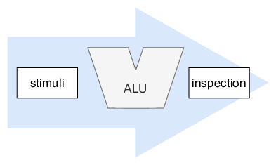

In earlier years you have used the classical way of simulating your designs: with testbenches.

Your design is instantiated in a higher entity and is referred to with the device under test (DUT). A number of stimuli are generated and are fed to the DUT. These stimuli can range from rather simple to very complex accurate models of certain signal sources.
The output of the DUT is monitored to determine whether the implementation behaves as is expected (or hoped for 😃). The results could be inspect visually (in waveforms), or they can be interpreted by (again) certain models.
A very useful technique (both for generating and validating) is the use of files. You(r script) create(s) a file with inputs, and you(r script) compare(s) the output files with a golden reference.
An extremely simple example of such a testbench is shown below.
--------------------------------------------------------------------------------
-- KU Leuven - ESAT/COSIC- Embedded Systems & Security
--------------------------------------------------------------------------------
-- Module Name: ALU_tb - Behavioral
-- Project Name: CD and Verif
-- Description: Classic testbench example on the ALU
--
-- Revision Date Author Comments
-- v0.1 20210311 VlJo Initial version
--
--------------------------------------------------------------------------------
library IEEE;
use IEEE.STD_LOGIC_1164.ALL;
entity ALU_tb is
end ALU_tb;
architecture Behavioural of ALU_tb is
signal clock : STD_LOGIC;
component ALU is
port (
A : in STD_LOGIC_VECTOR(7 downto 0);
B : in STD_LOGIC_VECTOR(7 downto 0);
flags_in : in STD_LOGIC_VECTOR(3 downto 0);
Z : out STD_LOGIC_VECTOR(7 downto 0);
flags_out : out STD_LOGIC_VECTOR(3 downto 0);
operation: in STD_LOGIC_VECTOR(2 downto 0)
);
end component;
signal a, b, z : STD_LOGIC_VECTOR(7 downto 0);
signal flags_in, flags_out : STD_LOGIC_VECTOR(3 downto 0);
signal operation : STD_LOGIC_VECTOR(2 downto 0);
constant clock_period : time := 10 ns;
begin
-------------------------------------------------------------------------------
-- STIMULI
-------------------------------------------------------------------------------
PSTIM: process
begin
-------------------------------------------------------------------------------
-- TESTING ADDITION WITH FLAGS
-------------------------------------------------------------------------------
A <= x"00";
B <= x"00";
operation <= "000";
flags_in <= "0000";
wait for clock_period;
assert(Z = x"00") report "error in result" severity failure;
-- Zfl Nfl Hfl Cfl
assert(flags_out = "1000") report "error in result" severity failure;
wait for clock_period;
A <= x"20";
B <= x"22";
operation <= "000";
wait for clock_period;
assert(Z = x"42") report "error in result" severity failure;
assert(flags_out = "0000") report "error in result" severity failure;
wait for clock_period;
wait for clock_period*1000;
end process;
-------------------------------------------------------------------------------
-- DEVICE UNDER TEST
-------------------------------------------------------------------------------
DUT: component ALU port map(
A => A,
B => B,
flags_in => flags_in,
Z => Z,
flags_out => flags_out,
operation => operation
);
-------------------------------------------------------------------------------
-- CLOCK
-------------------------------------------------------------------------------
PCLK: process
begin
clock <= '1';
wait for clock_period/2;
clock <= '0';
wait for clock_period/2;
end process;
end Behavioural;This could be fine for a couple of simple unit tests while developing. When designs become more complex, this will not scale.